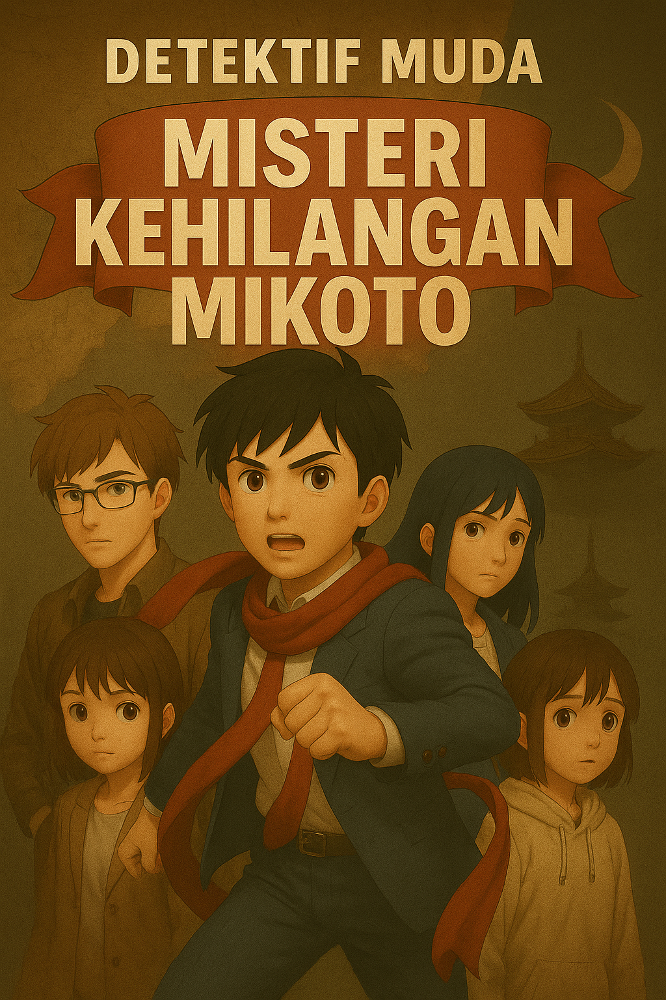

Detektif Muda: Misteri Kehilangan Mikoto

Watak Perwatakan
Kaito – Pemimpin kumpulan, bijak dan berani.
Yui – Analitik dan tenang, pakar strategi.
Haru – Penuh semangat, pakar teknikal.
Rina – Penyayang tetapi tegas, pendorong moral.
Satoshi – Tenang, pemerhati yang tajam.
Mikoto – Bijak, suka mengkaji sejarah kawasan
Bab 1 – Kelab Detektif Muda
Musim bunga baru sahaja bermula di bandar Kamakura. Pokok-pokok sakura di sepanjang jalan menuju Sekolah Menengah Kamakura Minami mula dipenuhi bunga merah jambu yang berguguran setiap kali angin laut bertiup. Cahaya matahari pagi menyelinap di celah-celah dahan, memantulkan sinar keemasan pada jalan batu yang masih sedikit basah akibat hujan malam tadi. Di pintu pagar sekolah, ratusan pelajar memenuhi kawasan itu dengan gelak tawa, suara perbualan dan bunyi loceng basikal. Namun, bagi seorang pelajar lelaki bernama Kaito Aizawa, pagi itu terasa seperti hari biasa, atau sekurang-kurangnya... begitulah sangkaannya. "Kalau aku gagal ujian Matematik lagi minggu ni, ayah aku memang rampas konsol permainan aku." Kaito mengeluh panjang sambil menutup mulutnya yang masih menguap. Di sebelahnya berjalan seorang gadis berkaca mata berambut hitam paras bahu. "Masalah kau bukan matematik." Yui langsung tidak memandang Kaito. "Masalah kau ialah kau tidur pukul dua pagi." Kaito terus terdiam. Yui menggeleng perlahan. "Kau sendiri yang muat naik gambar tengah main permainan dalam talian pukul dua pagi." "Patutlah aku rasa macam ada pengkhianat." "Pengkhianat tu ialah diri sendiri." Kaito hanya mampu ketawa kecil. Dari belakang, kedengaran suara seseorang menjerit. "Tunggu aku!" Seorang pelajar lelaki tinggi berambut perang muda berlari sambil menggigit roti kari. "Haru!" Kaito melambai. Haru tiba di hadapan mereka dalam keadaan tercungap-cungap. "Aku hampir terlewat sebab drone aku tersangkut atas bumbung rumah jiran." Yui memandangnya tanpa perasaan. "Tapi aku berjaya ambil balik.". "Normal." balas Kaito. Mereka bertiga ketawa. Tidak lama kemudian muncul pula seorang gadis berambut pendek yang sentiasa membawa senyuman, Rina. "Selamat pagi semua." "Awal hari ni." "Aku kena bantu cikgu kaunseling susun fail." Seorang lagi pelajar lelaki datang perlahan-lahan. Dia tidak banyak bercakap, Satoshi. Dia sekadar mengangguk. Walaupun pendiam, semua tahu Satoshi mempunyai satu kebolehan yang luar biasa. Dia sentiasa nampak perkara kecil yang orang lain abaikan. Sebab itulah Kaito sering berkata, "Kalau aku mata kumpulan... Satoshi ialah mata helang." Mereka berlima berjalan menuju bangunan utama sekolah. Di koridor tingkat dua, sebuah papan kenyataan baharu dipenuhi pelajar. "Apa benda tu?" Haru mencelah orang ramai. Beberapa saat kemudian dia menjerit. "Weh!" "Korang cepat sini!" Mereka menghampiri papan kenyataan. Di situ tertampal satu pengumuman rasmi. Pihak sekolah membuka permohonan bagi penubuhan Kelab Detektif Muda. Syarat: • Minimum lima orang ahli. • Mampu menyelesaikan sekurang-kurangnya satu kes dalam tempoh tiga bulan. Sekiranya gagal, kelab akan dibubarkan. Mata Kaito terus bersinar. "Kelab detektif..." Dia membaca sekali lagi. Kemudian memandang rakan-rakannya. "Kita buka." Yui terus membalas. "Tidak." "Kita belum bincang lagi." "Tetap tidak." "Kenapa?" "Kau suka cari pasal." "Aku suka cabaran." "Itulah masalahnya." Haru pula sudah tersenyum lebar. "Aku setuju!" "Aku boleh guna drone." Rina mengangkat bahu. "Bunyi menarik juga." Satoshi hanya berkata pendek. "Aku ikut." Kini semua mata memandang Yui. Yui mengurut dahinya. "Kalau aku seorang saja tak setuju pun..." "...kau orang tetap buat." Kaito tersenyum puas. "Tepat sekali." Yui menghela nafas. "Baiklah." "Tapi dengan satu syarat." "Kita buat semua ikut undang-undang." "Tak boleh ceroboh kawasan orang." "Tak boleh rosakkan bukti." "Tak boleh menyamar jadi polis." "Tak boleh—" "Baik, puan peguam." Yui menjeling tajam. Kaito terus mengangkat tangan tanda menyerah. "Baik." "Janji." Pada waktu rehat, mereka berlima berkumpul di sebuah bilik stor lama yang sudah bertahun-tahun tidak digunakan. Habuk memenuhi rak-rak kayu. Sebuah meja lama masih elok di tengah bilik. Kaito memandang sekeliling. "Aku rasa.....ini sesuai jadi bilik kelab." Haru meniup habuk di atas meja. Habuk terus berterbangan. "Atau muzium." Rina ketawa kecil. Mereka menghabiskan hampir sejam membersihkan bilik tersebut. Apabila selesai...bilik itu kelihatan jauh lebih kemas. Kaito berdiri di hadapan semua. "Mulai hari ini.....Kelab Detektif Muda Sekolah Menengah Kamakura Minami....ditubuhkan secara rasmi." Semua bertepuk tangan. Petang itu. Sebelum pulang...Pintu bilik kelab diketuk perlahan. Tok. Tok. Tok. "Masuk." Pintu terbuka. Seorang pelajar perempuan berdiri di hadapan mereka. Rambut hitam panjang. Mata yang tenang. Dan senyuman yang sopan. "Mikoto?" Kaito mengenalinya. Mikoto Tachibana. Pelajar kelas sebelah. Dia terkenal sebagai seorang yang gemar membaca buku sejarah dan melawat tempat-tempat lama di sekitar Kamakura. Mikoto memegang sebuah buku nota lusuh. "Aku dengar....korang baru tubuhkan Kelab Detektif."Mikoto melangkah masuk. Dia memandang kelima-lima ahli kelab seorang demi seorang. Kemudian meletakkan buku nota itu di atas meja. "Aku rasa....aku sedang diekori." Suasana bilik terus sunyi. Yui terus bertanya, "Sejak bila?" "Hampir seminggu." "Kau pasti?" Mikoto mengangguk perlahan. "Setiap kali aku balik....aku nampak van hitam yang sama...dan lelaki yang memakai jaket hitam." Kaito mula serius. "Kenapa kau tak lapor polis?" Mikoto terdiam beberapa saat. "Aku pernah….Tapi..Mereka kata mungkin aku cuma terlalu takut." Rina dapat melihat tangan Mikoto menggigil ketika memegang buku nota itu. Mikoto membuka buku notanya. Di dalamnya terdapat beberapa keping gambar sebuah kuil lama di tengah hutan. Di satu halaman, terdapat lakaran simbol burung gagak berwarna hitam. "Semua ini bermula....apabila aku pergi ke Kuil Shiranami minggu lepas." Belum sempat Mikoto meneruskan ceritanya...Telefon bimbitnya berbunyi. Dia melihat skrin. Wajahnya terus berubah pucat. "Maaf...aku kena balik sekarang." Dia segera mencapai buku notanya. Sebelum keluar dari bilik...Dia berpaling. "Kalau...kalau esok aku tak datang sekolah....tolong cari aku." Pintu tertutup perlahan. Lima ahli Kelab Detektif Muda saling berpandangan. Tiada siapa bersuara. Di luar tingkap...Sebuah van hitam sedang berhenti di seberang jalan sekolah. Di tempat duduk pemandu...Seorang lelaki berjaket hitam memandang tepat ke arah bilik kelab. Kemudian...Van itu bergerak perlahan meninggalkan kawasan sekolah. Mereka tidak tahu...Itulah kali terakhir mereka melihat Mikoto.
Bab 2 – Mikoto Hilang
Pagi berikutnya, suasana di Sekolah Menengah Kamakura Minami kelihatan seperti biasa. Cahaya matahari menyinari padang sekolah, loceng pertama berbunyi tepat pada pukul lapan pagi, dan para pelajar mula memenuhi kelas masing-masing. Namun, bagi lima ahli Kelab Detektif Muda, kata-kata terakhir Mikoto pada petang semalam masih terngiang-ngiang dalam fikiran mereka. "Kalau esok aku tak datang sekolah... tolong cari aku." Kaito duduk di tempatnya sambil memandang ke arah meja kosong di barisan tepi tingkap. Itulah tempat Mikoto setiap hari. Beg sekolahnya tiada, kerusinya masih tersusun rapi, dan tiada tanda dia akan datang lewat seperti kebiasaannya. Guru kelas memasuki bilik dengan wajah yang agak serius. "Selamat pagi, semua." "Selamat pagi, cikgu." Guru itu membuka buku kehadiran sebelum berhenti seketika apabila tiba pada nama Mikoto. "Mikoto Tachibana masih belum hadir. Ada sesiapa tahu sebabnya?" Seluruh kelas saling berpandangan. Tiada siapa menjawab. Kaito menoleh ke arah Yui. Gadis itu hanya menggeleng perlahan. "Baiklah," kata guru itu. "Saya sudah cuba menghubungi keluarganya pagi tadi. Ibunya memaklumkan Mikoto tidak pulang ke rumah sejak petang semalam." Suasana kelas terus menjadi sunyi. Beberapa pelajar mula berbisik sesama sendiri. "Hilang?" "Serius ke?" "Dia lari dari rumah kah?" Guru kelas mengetuk meja perlahan. "Polis sedang menjalankan siasatan. Saya harap tiada sesiapa menyebarkan khabar angin." Namun bagi Kaito, kata-kata itu hanya menambahkan keresahan. Dia masih teringat wajah Mikoto semalam….wajah seorang gadis yang benar-benar ketakutan, bukan seseorang yang ingin melarikan diri. Sebaik loceng rehat berbunyi, lima sahabat itu terus menuju ke bilik Kelab Detektif Muda. Kaito menutup pintu sebelum bersandar pada meja. "Aku tak percaya dia lari dari rumah." "Aku pun," balas Rina. "Semalam dia betul-betul takut."Yui membuka buku notanya. "Kita susun fakta dahulu."Dia menulis di papan putih kecil yang baru dibeli Haru. Fakta Kes • Mikoto mendakwa diekori selama seminggu. • Van hitam sering berada berhampiran rumahnya. • Lelaki berjaket hitam diperhatikannya beberapa kali. • Dia pergi ke Kuil Shiranami minggu lepas. • Dia meminta kita mencarinya jika dia tidak datang sekolah. Yui memandang semua ahli."Ini bukan kebetulan." Haru menyampuk. "Polis mungkin fikir dia lari, tapi aku rasa dia dah diculik." Satoshi yang sejak tadi diam memandang ke luar tingkap. "Kita kena pergi tempat terakhir dia dilihat.” Kaito mengangguk. "Pintu belakang sekolah." Selepas tamat sesi persekolahan, mereka berlima berjalan ke laluan belakang sekolah. Kawasan itu jauh lebih sunyi berbanding pintu utama. Hanya beberapa batang pokok sakura tumbuh di sepanjang lorong kecil yang menghala ke kawasan parkir lama. Rina melihat sekeliling. "Sunyi betul." "Tak ramai pelajar lalu sini," jawab Haru. Kaito berjalan perlahan sambil memerhatikan setiap inci tanah. Yui mengangkat telefon bimbit dan mengambil beberapa gambar lokasi. "Kita jangan sentuh apa-apa dulu." Beberapa minit kemudian...Satoshi berhenti. "Situ." Semua berpaling. Di bawah pagar besi, terselit sesuatu yang berwarna merah. Kaito memakai sarung tangan nipis yang sentiasa disimpan dalam begnya sebelum mengambil objek tersebut. Reben merah. Semua mengenalinya. "Itu reben rambut Mikoto," kata Rina perlahan. Yui memeriksanya dengan teliti. "Tak koyak." "Tak ada kesan darah." "Tapi ada lumpur." Kaito memandang tanah berhampiran. "Tunggu." Dia berlutut. "Ada kesan tayar." Haru segera mengambil gambar. "Empat roda." Satoshi pula berjalan beberapa langkah ke hadapan. Yui menyambung. "Dan Mikoto mungkin dipaksa masuk." Suasana menjadi semakin tegang. Jantung Kaito berdegup lebih laju. Ini bukan lagi sekadar kehilangan biasa. Malam itu, Haru menghantar mesej dalam kumpulan Kelab Detektif Muda."Aku berjaya dapat rakaman CCTV kedai serbaneka dekat sekolah." Mereka terus berkumpul melalui panggilan video. Rakaman dimainkan. Jam menunjukkan 4:58 petang. Kelihatan Mikoto berjalan seorang diri. Beberapa saat kemudian...Van hitam muncul dari simpang. Van itu berhenti. Seorang lelaki memakai jaket hitam keluar. Namun wajahnya tidak jelas kerana memakai topi dan pelitup muka. Rakaman tiba-tiba terganggu. Skrin menjadi hitam selama lima belas saat.bApabila rakaman kembali normal...Van itu sudah tiada. Begitu juga Mikoto. Hanya tinggal...Reben merah yang jatuh di atas jalan. Semua terdiam. Haru memperlahankan rakaman. "Tunggu..." Dia mengezum bahagian belakang van. "Nombor plat tak jelas..." "Tapi...Aku rasa aku nampak logo." Yui mendekatkan wajah ke skrin. Logo seekor...Burung gagak hitam. Simbol yang sama seperti dalam buku nota Mikoto. Kaito menggenggam penumbuknya. "Ini bukan kes orang hilang." "Ini penculikan."
Bab 3 – Reben Merah dan Buku Nota
Hujan renyai turun sejak awal pagi. Langit Kamakura yang biasanya cerah kini diselubungi awan kelabu. Di bilik Kelab Detektif Muda, suasana jauh berbeza daripada hari pertama penubuhannya. Tiada lagi gelak ketawa atau gurauan Haru. Di atas meja hanya terdapat beberapa keping gambar, dan sehelai reben merah di dalam beg bukti plastik. Kaito berdiri di hadapan papan putih sambil memandang semua ahli. "Mulai hari ini, ini ialah kes pertama rasmi Kelab Detektif Muda." Tiada siapa membantah. Yui membuka buku notanya."Kalau kita nak selesaikan kes ini, kita kena fikir macam detektif, bukan macam mangsa." "Apa bezanya?" tanya Haru. "Detektif cari fakta." "Penjahat tinggalkan kesilapan." "Kita cuma perlu cari kesilapan itu." Satoshi mengangguk perlahan. "Semua penjenayah buat silap.""Persoalannya....siapa yang perasan dahulu." Selepas tamat kelas, mereka menuju ke rumah Mikoto dengan menaiki bas bandar. Rumah keluarga Tachibana terletak di kawasan perumahan yang tenang berhampiran kaki bukit. Sebuah rumah kayu dua tingkat yang dijaga rapi, dengan pasu bunga memenuhi halaman hadapan. Ibu Mikoto menyambut mereka dengan wajah yang jelas keletihan. Matanya bengkak akibat terlalu banyak menangis. "Kamu semua kawan Mikoto?" "Ya, puan," jawab Rina lembut. Wanita itu memandang mereka seketika sebelum tersenyum. "Masuklah." Ruang tamu dipenuhi gambar keluarga. Di atas rak, terdapat gambar Mikoto sejak kecil, memenangi pertandingan pidato, menyertai kelab sejarah dan menerima pelbagai anugerah akademik. "Polis dah datang dua kali," kata ibunya perlahan. "Tapi mereka masih belum jumpa apa-apa." Kaito memandang Yui. Yui terus bertanya. "Puan... boleh kami lihat bilik Mikoto?" Wanita itu terdiam seketika sebelum mengangguk. "Asalkan jangan ubah apa-apa." Bilik Mikoto sangat kemas. Rak bukunya dipenuhi buku sejarah Jepun, arkeologi dan kisah-kisah kuil lama di Kamakura. Sebuah meja belajar menghadap tingkap, manakala di sebelahnya terdapat papan gabus yang dipenuhi gambar-gambar bangunan lama. "Aku tak sangka dia minat sejarah sampai macam ni," kata Haru. Rina tersenyum. "Dia pernah kata sejarah sentiasa menyimpan rahsia." Yui mula memeriksa meja belajar tanpa menyentuh apa-apa. Satoshi pula hanya berdiri di tengah bilik sambil memandang sekeliling. Kaito membuka laci pertama. Kosong. Laci kedua. Alat tulis. Laci ketiga... "...Tunggu." Di bahagian paling belakang terdapat sebuah ruang kecil yang ditutup dengan papan nipis. Kaito membuka papan itu perlahan-lahan. Di dalamnya terdapat sebuah buku nota kulit berwarna coklat. "Ini bukan buku yang dia bawa semalam," kata Rina. Yui memakai sarung tangan sebelum mengambil buku tersebut. Di halaman pertama tertulis kemas. Catatan Penyiasatan Mikoto Tachibana Semua saling berpandangan. "Dia buat penyiasatan sendiri?" tanya Haru. Yui mula membaca. Hari Pertama: Aku nampak van hitam berhenti berhampiran Kuil Shiranami. Seorang lelaki membawa kotak kayu ke dalam kuil. Kuil itu sepatutnya telah ditutup sejak bertahun-tahun dahulu. Hari Ketiga: Van yang sama muncul lagi. Nombor plat berbeza. Tetapi calar di pintu belakang masih sama. Mereka sengaja menukar nombor pendaftaran. Hari Keenam: Aku rasa aku sedang diekori. Kalau sesuatu berlaku kepada aku...Jangan percaya semua orang. Semua terdiam. "Dia tahu dia sedang diperhatikan," kata Kaito perlahan. Yui menyelak halaman seterusnya. Di situ terdapat beberapa gambar yang dilekatkan menggunakan pita pelekat. Salah satunya menunjukkan sebuah van hitam. Gambar kedua menunjukkan pintu masuk Kuil Shiranami. Gambar ketiga...Seorang lelaki. Mukanya kabur. Tetapi jaket hitamnya jelas kelihatan. "Ini lelaki dalam CCTV," kata Haru. Satoshi mendekat. "Tidak." Semua memandangnya. "Bukan." "Kasut dia lain." Yui terus melihat gambar itu. Memang betul. Dalam CCTV lelaki itu memakai kasut hitam biasa. Dalam gambar Mikoto... Lelaki yang sama memakai but mendaki."Maknanya....ada lebih daripada seorang." Jantung Kaito berdegup semakin laju. Tiba-tiba Rina memanggil. "Korang sini." Di belakang almari terdapat sekeping peta Kamakura yang dipenuhi tanda bulatan merah. Bulatan pertama…Sekolah. Bulatan kedua….Pelabuhan Lama. Bulatan ketiga….Kuil Shiranami. Bulatan terakhir...Sebuah kawasan hutan. Di tepinya tertulis dengan tulisan tangan Mikoto. "Mereka selalu bergerak melalui laluan ini." Haru segera mengambil gambar peta itu. "Aku rasa kita dah jumpa laluan penculik." Yui pula menemui sesuatu yang lebih menarik. Di sudut bawah peta terdapat nombor telefon. Tiada nama. Hanya nombor. Kaito mengeluarkan telefon. "Cuba hubungi?" Yui menggeleng. "Jangan." "Kalau itu nombor mereka...mereka akan tahu kita sedang menyiasat." Haru tersenyum kecil. "Serahkan pada aku." "Aku boleh jejak nombor itu tanpa buat panggilan." Mereka turun semula ke ruang tamu. Ibu Mikoto menghidangkan teh hijau. "Saya harap kamu semua tidak membahayakan diri." Kaito tersenyum. "Kami cuma nak bantu." Wanita itu mengangguk perlahan. Sebelum mereka pulang, dia memberikan sesuatu kepada Kaito. "Saya jumpa ini di bawah pintu rumah pagi tadi." Sepucuk sampul surat putih. Tiada setem…Tiada nama. Di dalamnya hanya terdapat sekeping gambar. Gambar Mikoto. Tangannya diikat. Matanya ditutup dengan kain hitam. Di belakang gambar tertulis menggunakan pen marker merah. "BERHENTI MENCARI DIA." Rina terus menutup mulutnya. Yui menggenggam gambar itu kuat. Haru kelihatan benar-benar marah. "Kurang ajar..." Kaito memandang gambar tersebut lama. Kemudian dia membalikkan gambar itu sekali lagi. "Tunggu….Ada sesuatu." Satoshi mengambil gambar itu. "Dengar." Semua senyap. "Bukan tulisan." "Kertas." "Kertas ini berbau." Yui menghidu perlahan. "Bau minyak..." "Bukan…Bau laut." Kaito tersenyum buat kali pertama sejak kehilangan Mikoto. "Pelabuhan." Haru mengangguk. "Kalau gambar ini baru dihantar pagi tadi....bermakna penculik berada berhampiran kawasan pelabuhan." Yui terus membuka peta. "Sasaran kita seterusnya....Pelabuhan Lama Kamakura." Malam itu, ketika mereka sedang berbincang di dalam bilik kelab melalui panggilan video, telefon Haru berbunyi. Dia melihat skrin komputer. Mukanya terus berubah. "Kaito...Ada orang cuba godam komputer aku." "Apa?" "Mereka cuba padam semua salinan rakaman CCTV." "Berjaya tak?" Haru tersenyum sinis. "Mereka silap orang." "Sebab sekarang....aku dah tahu dari mana mereka cuba masuk." "Lokasi dia?" Haru memusingkan skrin komputer ke arah kamera. Di peta digital itu hanya muncul satu lokasi….KUIL SHIRANAMI. Semua ahli Kelab Detektif Muda terdiam. Mereka akhirnya mempunyai petunjuk pertama yang benar-benar kukuh. Namun tanpa mereka sedari... Di dalam sebuah bangunan usang berhampiran Pelabuhan Lama, seorang lelaki berjaket hitam sedang memerhatikan gambar lima pelajar itu di atas meja. Di sebelah gambar, seorang lelaki bertopeng gagak duduk di kerusi sambil mengetuk meja menggunakan jarinya. "Lima budak sekolah..." katanya perlahan. "Kalau mereka terus menghampiri kebenaran...pastikan mereka tidak sampai ke Kuil Shiranami." Lelaki berjaket hitam hanya mengangguk. "Faham, Tuan Raven."
Bab 4 – Pelabuhan Lama Kamakura
Matahari baru sahaja terbit ketika lima ahli Kelab Detektif Muda berkumpul di stesen Kamakura. Walaupun hari itu merupakan cuti hujung minggu, wajah masing-masing jelas menunjukkan mereka tidak datang untuk berseronok. Di tangan Kaito terdapat salinan peta Kamakura yang dilukis Mikoto, manakala Yui membawa buku nota penyiasatan. Haru pula memikul beg galas yang dipenuhi komputer riba, kamera digital, pengecas mudah alih dan sebuah dron bersaiz kecil. "Kita ulang semula rancangan," kata Kaito sambil memandang rakan-rakannya. "Sasaran kita ialah Pelabuhan Lama. Jangan bertindak seorang diri. Kalau nampak sesuatu yang mencurigakan, terus maklumkan kepada semua." "Faham," jawab mereka serentak. Perjalanan ke Pelabuhan Lama mengambil masa hampir empat puluh minit dengan menaiki kereta api dan berjalan kaki. Kawasan itu jauh berbeza daripada pusat bandar Kamakura yang dipenuhi pelancong. Gudang-gudang lama berdiri usang di sepanjang pantai, cat pada dindingnya telah mengelupas, dan kebanyakan kedai sudah lama ditinggalkan. Hanya bunyi ombak dan camar yang memecahkan kesunyian. "Bau laut pada gambar ugutan itu memang datang dari sini," kata Yui sambil menghidu udara masin. Satoshi memandang ke arah jalan yang dipenuhi kesan tayar. "Masih ada kenderaan keluar masuk." "Walaupun kawasan ini hampir kosong." Kaito mengangguk. "Maksudnya masih ada aktiviti." Mereka berjalan perlahan menyusuri deretan gudang lama. Beberapa nelayan sedang membaiki jaring, tetapi selain itu kawasan tersebut hampir lengang. Rina menghampiri seorang lelaki tua yang sedang mengecat bot kayunya. "Maaf, pak cik. Boleh kami tanya sesuatu?" Lelaki tua itu mengangguk sambil meletakkan berus cat. "Kami sedang mencari seorang rakan yang hilang." Rina menunjukkan gambar Mikoto. Lelaki tua itu mengamati gambar tersebut sebelum menggeleng. "Saya tak pernah nampak budak perempuan ini." Wajah Rina sedikit kecewa. "Tapi..Sejak beberapa minggu kebelakangan ini, memang ada van hitam selalu datang ke gudang nombor tujuh." Semua ahli kelab terus berpandangan. "Gudang nombor tujuh?" tanya Kaito. "Ya. Selalu datang waktu petang. Mereka tak pernah bercakap dengan orang sini." "Pak cik tahu mereka buat apa?" "Tidak…Tapi setiap kali mereka datang...mereka bawa kotak kayu." Haru terus mencatat maklumat itu. Gudang nombor tujuh terletak paling hujung kawasan pelabuhan. Bangunannya lebih besar daripada gudang lain dan dikelilingi pagar besi yang sudah berkarat. Sebuah papan tanda lama bertulis DILARANG MASUK masih tergantung di pintu hadapan. Kaito memberi isyarat supaya mereka berhenti. "Kita tak boleh masuk sesuka hati." Yui mengangguk. "Kita cuma buat pemerhatian." Haru mengeluarkan dronnya. "Kalau macam itu....biar mata di langit buat kerja." Beberapa saat kemudian, dron kecil itu terbang perlahan ke udara. Paparan kameranya muncul pada komputer riba Haru. Mereka melihat kawasan dalam gudang melalui skrin. Pada mulanya hanya kelihatan beberapa kotak kayu dan rak besi lama. Kemudian...Satu van hitam memasuki kawasan gudang. "Van itu!" jerit Kaito perlahan. Haru segera merakam video. Empat orang lelaki turun dari van tersebut. Mereka mengangkat beberapa kotak besar ke dalam gudang. Salah seorang daripada mereka memakai jaket hitam yang sama seperti lelaki dalam rakaman CCTV. "Itu dia..." bisik Rina. Tiba-tiba lelaki tersebut berhenti berjalan. Dia memandang tepat ke arah dron. "Kaito..." suara Haru mula cemas. "Dia nampak dron aku." Belum sempat sesiapa bertindak, salah seorang lelaki mengangkat sesuatu yang kelihatan seperti senapang angin. "Duk!" Peluru kecil mengenai dron.,Skrin komputer terus menjadi gelap. "Dron aku!" jerit Haru. Dron itu terhempas di belakang gudang. "Semua berundur!" arah Kaito. Mereka segera berlari meninggalkan kawasan itu sebelum sempat dikesan. Mereka berhenti di sebuah kedai serbaneka yang terletak beberapa ratus meter dari pelabuhan. Haru masih kecewa. "Dron itu mahal..." "Tapi sekurang-kurangnya kita dapat rakaman," kata Yui. "Dan mereka sekarang tahu ada orang sedang memerhatikan mereka," balas Haru. "Itu yang aku risau." Kaito membuka rakaman video yang sempat disimpan sebelum dron ditembak. Video dimainkan perlahan. Kelihatan empat lelaki membawa kotak. Kemudian...Satoshi tiba-tiba menekan butang jeda. "Berhenti." Semua melihat skrin. "Apa?" Dia menunjuk ke arah salah satu kotak kayu. Di tepinya terdapat pelekat penghantaran. ‘SHIRANAMI CULTURAL FOUNDATION’ "Shiranami...Itu nama kuil." "Tapi kenapa gudang ini gunakan nama yayasan?" Kaito terus mencatatnya. "Ini mungkin organisasi yang menyamar." Haru kemudian membuka satu lagi rakaman yang diambil beberapa saat sebelum dron ditembak. "Dekat belakang van..." Mereka mengezum gambar itu. Kelihatan seorang lelaki tua memakai pakaian keselamatan sedang bercakap dengan lelaki berjaket hitam. Kaito mengecilkan matanya. "Macam pernah nampak." Rina turut memandang. "Betul..." "Tapi dekat mana?" Beberapa saat kemudian...Satoshi bersuara perlahan. "Stor sekolah." Semua terus memandangnya. "Pengawal stor sekolah." Barulah mereka teringat. Lelaki tua itu memang bekerja di sekolah mereka sebagai penjaga stor lama. "Mustahil..." kata Haru. "Kenapa dia ada dekat sini?" Yui menutup buku notanya. "Kita belum boleh buat kesimpulan." "Mungkin dia cuma kenal mereka….Tapi...kalau dia benar-benar terlibat...bermakna orang dalam sekolah sendiri membantu penculik." Suasana kembali sunyi. Petang itu mereka pulang ke sekolah untuk memeriksa stor tempat lelaki tersebut bekerja. Pintu stor terbuka sedikit. Tiada sesiapa di dalam. Kaito memeriksa meja kecil berhampiran pintu. "Macam baru ditinggalkan." Rina menemui secawan kopi yang masih suam. "Dia baru keluar." Satoshi berjalan ke rak paling belakang. Di lantai terdapat kesan lumpur yang masih belum kering. "Lumpur ini....sama macam pada reben Mikoto." Yui memeriksanya. "Tanah merah." "Jenis tanah yang sama dengan kawasan berhampiran Pelabuhan Lama." Kaito memandang ke arah rak besi. Salah satu kotak kelihatan sedikit terbuka. Dia menariknya perlahan. Di dalam kotak itu terdapat beberapa fail lama sekolah. Namun terselit di celah fail... Sekeping gambar. Gambar Mikoto. Kali ini dia kelihatan sedang berjalan di kawasan sekolah. Seolah-olah seseorang telah lama memerhatikannya. Belum sempat mereka berbincang, bunyi enjin van kedengaran dari luar sekolah. Haru mengintai melalui tingkap. Mukanya terus pucat. "Van hitam...dia datang ke sekolah." Kaito menutup kotak itu segera. "Semua padam lampu." Mereka bersembunyi di dalam stor yang gelap. Beberapa saat kemudian...Langkah kaki seseorang semakin menghampiri pintu. Pemegang pintu perlahan-lahan dipulas dari luar.
Bab 5 – Mengekori
Pintu stor terbuka sedikit. Seorang lelaki melangkah masuk. Dia memakai topi hitam dan jaket gelap yang sama seperti lelaki dalam rakaman CCTV. Wajahnya dilindungi pelitup muka, namun matanya tajam memerhati setiap sudut stor. Kaito memberi isyarat supaya semua diam. Lelaki itu berjalan ke arah meja kecil berhampiran pintu. Dia membuka laci, mengeluarkan beberapa fail dan memasukkannya ke dalam beg hitam. Kemudian dia mengambil telefon bimbitnya. "Gudang sudah bersih." Suara lelaki itu perlahan tetapi jelas. "Ya...Budak-budak itu semakin hampir." "Kami akan pindahkan semua barang malam ini." Kaito menahan nafas. Yui segera menghidupkan fungsi rakaman suara pada telefonnya tanpa mengeluarkan sebarang bunyi. Haru pula memegang kamera kecil di dalam poket jaketnya. Selepas beberapa minit, lelaki itu keluar dari stor dan pintu ditutup semula. Mereka menunggu hampir seminit sebelum berani bergerak. "Kita ikut dia," bisik Kaito. Di luar bangunan sekolah, matahari hampir terbenam. Mereka melihat lelaki itu berjalan menuju ke sebuah van hitam yang diletakkan berhampiran pintu belakang sekolah. "Itu van yang sama!" kata Haru perlahan. "Jangan terlalu dekat," pesan Yui. Mereka berlindung di sebalik pokok-pokok sakura sambil memerhatikan van tersebut. Lelaki itu membuka pintu belakang van. Dari jauh kelihatan beberapa kotak kayu disusun kemas. Sebelum pintu ditutup semula, Satoshi sempat melihat sesuatu. "Dalam van." Satoshi menunjuk ke arah bahagian dalam. "Ada selimut…Dan botol air." Yui mengerutkan dahi. "Itu biasa." "Bukan." Satoshi menggeleng. "Kalau cuma untuk angkut barang....kenapa ada selimut dan makanan?" Semua terus terdiam. Kemungkinan yang bermain di fikiran mereka hanya satu. Mungkin seseorang pernah dibawa hidup-hidup di dalam van itu. Van hitam mula bergerak meninggalkan sekolah. "Kita kena ikut," kata Kaito. "Tapi macam mana?" tanya Rina. Haru tersenyum kecil sambil mengeluarkan sebuah alat sebesar duit syiling. "GPS Tracker." "Kau letak bila?" tanya Kaito. "Masa lelaki itu masuk stor tadi….Aku lontarkan bawah van." Yui menggeleng sambil tersenyum tipis. "Kadang-kadang idea kau memang gila…Tapi berguna." Haru membuka komputer ribanya. Titik merah pada peta digital mula bergerak perlahan. "Van itu menuju ke utara….Laluan hutan..." kata Satoshi. Malam itu, mereka berkumpul semula di bilik kelab. Haru menyambungkan komputernya ke projektor kecil yang dipasang pada dinding. "Tracker masih aktif." Semua melihat titik merah berhenti di kawasan hutan Kurokami. "Kawasan ini..." kata Yui sambil membuka peta lama Mikoto. "...ialah laluan yang dia tandakan." Kaito memandang semua ahli. "Esok kita pergi." "Tunggu." Rina mencelah. "Kalau mereka benar-benar sindiket penculik...bukankah berbahaya?" Kaito terdiam. Memang benar. Mereka hanyalah pelajar sekolah menengah. Bukan polis. Yui menyambung. "Sebab itu kita bukan pergi untuk berlawan." "Kita cuma kumpul bukti." "Kalau kita dapat lokasi Mikoto....polis tak ada sebab lagi untuk kata dia lari." Semua mengangguk bersetuju. Pada tengah hari, mereka menaiki bas menuju ke Hutan Kurokami. Jalan semakin sempit dan dikelilingi pokok-pokok cedar yang tinggi. Isyarat telefon mula hilang sedikit demi sedikit. Haru memandang skrin GPS. "Tracker masih ada…Tak jauh lagi." Mereka turun di sebuah hentian bas lama. Dari situ hanya terdapat satu laluan tanah merah menuju ke dalam hutan. Satoshi tiba-tiba berhenti. "Jangan bergerak." Semua memandangnya. Dia berlutut lalu menunjukkan kesan tayar yang masih jelas di atas tanah. "Tayar van…Masih baru." Kaito tersenyum. "Maknanya...mereka masih berada di sini." Mereka berjalan perlahan mengikut kesan tayar. Selepas hampir lima belas minit, di sebalik pokok-pokok besar, muncul sebuah gudang kayu lama yang hampir ditelan hutan. Bangunan itu kelihatan usang, tetapi pintunya baru dicat. "Asing..." bisik Yui. "Terlalu bersih untuk bangunan lama." Haru menerbangkan dron gantian yang lebih kecil. Kamera menunjukkan kawasan sekitar gudang.Tiada sesiapa. "Tengok belakang bangunan," kata Kaito. Dron berpusing ke belakang. Semua ahli kelab terdiam. Di belakang gudang terdapat dua buah van hitam. Dan di sebelahnya...Seorang gadis sedang duduk di atas kerusi dengan tangan terikat. Mukanya tidak jelas kerana kamera terlalu jauh. Namun rambut panjangnya...Membuatkan jantung Kaito berdegup kencang. "Mikoto..." Belum sempat mereka memastikan identiti gadis itu, skrin komputer Haru tiba-tiba dipenuhi gangguan. Seseorang sedang menggodam frekuensi dron. Kemudian satu suara kedengaran melalui pembesar suara dron. "Kalau kamu mahu terus hidup...berpatah balik sekarang." Mereka saling berpandangan. Suara itu tenang. Namun cukup untuk membuat bulu roma mereka meremang. Di dalam gudang, seorang lelaki bertopeng gagak sedang memandang tepat ke arah kamera dron sambil tersenyum. "Selamat datang ke permainan kami, Kelab Detektif Muda."
Bab 6 – Pengejaran dalam Kabus
Suara misteri yang keluar daripada pembesar suara dron menyebabkan lima ahli Kelab Detektif Muda membeku di tempat mereka berdiri. "Kalau kamu mahu terus hidup... berpatah balik sekarang." Paparan pada komputer riba Haru bertukar hitam. Sambungan dengan dron terputus sepenuhnya. "Dia godam dron aku..." bisik Haru, wajahnya pucat. Yui menutup komputer riba dengan pantas. "Mereka bukan penculik biasa." "Mereka tahu gunakan teknologi." Kaito memandang ke arah gudang yang tersembunyi di celah-celah pokok cedar. "Kalau mereka dah tahu kita ada di sini....lebih baik kita berundur."Buat pertama kali sejak kelab itu ditubuhkan, Kaito memilih untuk berundur daripada mengambil risiko. Mereka berlari menyusuri laluan tanah merah sehingga tiba di jalan utama. Selepas memastikan tiada sesiapa mengejar, mereka berhenti di sebuah pondok rehat lama. Haru masih tidak puas hati. "Kita dah jumpa Mikoto!" "Kenapa kita tak selamatkan dia?" "Kau pasti itu Mikoto?" soal Yui. Haru terdiam. "Skrin terlalu jauh." "Betul," sambung Yui. "Kalau kita masuk tanpa rancangan, kita berlima mungkin akan ditangkap." Rina memandang Kaito. "Aku rasa Yui betul." "Kita perlukan bukti yang lebih kukuh." Kaito mengangguk perlahan."Mulai sekarang....setiap langkah mesti dirancang." Dalam perjalanan pulang, Satoshi yang duduk di belakang bas tidak berhenti memandang ke luar tingkap. Tiba-tiba dia mengetuk bahu Kaito. "Van." Semua segera menoleh. Di jalan kecil yang selari dengan bas mereka, sebuah van hitam sedang bergerak perlahan."Itu van yang sama?" tanya Rina. Haru mengeluarkan kamera. "Tunggu..." Dia mengezum gambar. "Nombor plat lain." "Tapi calar pada pintu belakang masih sama." Yui tersenyum kecil. "Macam dalam catatan Mikoto." "Mereka memang tukar nombor plat." Malam itu, mereka berkumpul di bilik kelab untuk menyusun semua bukti yang diperoleh setakat ini. Yui melukis garis masa di papan putih. Semua petunjuk membentuk satu corak. Namun masih ada satu persoalan besar. "Kenapa Mikoto?" tanya Rina. "Bukan orang lain." Suasana kembali sunyi. Tiba-tiba Haru membuka komputer ribanya. "Aku dah siap jejak nombor telefon yang kita jumpa dalam bilik Mikoto." Semua menghampirinya. "Macam mana?" "Nombor itu tak didaftarkan atas nama sesiapa." "Habis?" "Tapi...Ia selalu berhubung dengan satu nombor lain." "Nombor siapa?" Haru menekan papan kekunci. Beberapa saat kemudian wajahnya berubah. "Tak mungkin..." "Apa?" tanya Kaito. "Nombor kedua itu...berdaftar atas nama Yayasan Kebudayaan Shiranami." Yui terus berdiri. "Yayasan yang sama pada kotak di gudang pelabuhan." Kaito menggenggam penumbuk. "Semuanya berkait." Keesokan harinya, Yui mencadangkan mereka pergi ke perpustakaan bandar untuk menyiasat Yayasan Kebudayaan Shiranami. Perpustakaan Kamakura menyimpan rekod lama organisasi dan bangunan bersejarah. Seorang pustakawan tua membantu mereka mencari fail mengenai yayasan tersebut. "Yayasan ini ditubuhkan hampir dua puluh lima tahun dahulu." "Tujuannya?" "Kononnya untuk memulihara kuil lama." "Kononnya?" tanya Rina. Pustakawan itu tersenyum nipis. "Selepas lima tahun...yayasan itu dibubarkan." "Kenapa?" "Tiada siapa tahu….Semua rekod kewangan hilang." Yui membelek fail lama itu. Di dalamnya terdapat gambar beberapa orang pengasas yayasan. Satoshi tiba-tiba menunjuk ke arah salah seorang lelaki dalam gambar. "Dia." Semua memandang."Itu...Lelaki stor sekolah." Memang benar. Dua puluh lima tahun dahulu, penjaga stor sekolah mereka pernah menjadi pekerja Yayasan Kebudayaan Shiranami. Haru terus mengambil gambar fail tersebut. Ketika mereka hendak meninggalkan perpustakaan, seorang lelaki tua memanggil mereka. "Kamu sedang menyiasat Kuil Shiranami?" Mereka semua berpaling. Lelaki itu memperkenalkan dirinya sebagai Profesor Kenji Mori, bekas pensyarah sejarah Universiti Kamakura. "Saya kenal Mikoto." Semua terkejut. "Dia pernah datang berjumpa saya minggu lepas.” "Dia tanya apa?" soal Kaito. Profesor itu membuka sebuah buku lama. "Kuil Shiranami sebenarnya bukan sekadar kuil." "Habis?" "Di bawah kuil....terdapat terowong bawah tanah yang dibina semasa Perang Dunia Kedua." "Terowong?" "Ya." "Terowong itu bersambung sehingga ke Pelabuhan Lama." Lima ahli kelab terus saling berpandangan. Kini mereka faham mengapa semua petunjuk sentiasa membawa kepada dua tempat yang sama. Pelabuhan. Dan kuil. "Profesor..." "Masih ada peta terowong itu?" tanya Yui. Profesor itu mengangguk perlahan. "Ada…Tapi..Seseorang telah mencurinya tiga hari lalu." Kaito terkejut. "Tiga hari lalu?" "Itulah hari Mikoto hilang." Profesor itu mengeluarkan sekeping gambar lama. "Saya sempat mengambil salinan sebelum ia dicuri." Gambar itu menunjukkan pintu batu besar di bawah kuil. Di bahagian bawah gambar tertulis satu ayat. ‘PINTU TEROWONG UTAMA – DILARANG DIBUKA TANPA KEBENARAN KERAJAAN.’ Petang itu, ketika mereka keluar dari perpustakaan, langit mula gelap. Hujan turun dengan lebat. Satoshi tiba-tiba berhenti berjalan. "Ada orang ikut." Tanpa menoleh ke belakang, dia melihat pantulan pada cermin kedai berhampiran. Seorang lelaki memakai baju hujan hitam sedang berdiri kira-kira lima puluh meter dari mereka. Apabila Kaito cuba menoleh...Lelaki itu terus menghilang di celah orang ramai. "Dia dah tahu kita jumpa profesor," kata Yui. Kaito memandang gambar pintu terowong yang berada di tangannya. "Ini bukan sekadar kes penculikan." "Mereka sedang melindungi sesuatu." Pada malam itu, di sebuah bilik gelap di dalam Kuil Shiranami, lelaki bertopeng gagak menerima laporan daripada anak buahnya. "Tuan Raven…Budak-budak itu sudah mengetahui tentang terowong." The Raven tersenyum kecil sambil memandang monitor CCTV yang memaparkan wajah Kaito dan rakan-rakannya. "Biarkan mereka datang." "Tuan?” "Kalau mereka memasuki terowong...mereka tidak akan keluar semula." Di sudut bilik itu, kelihatan seorang gadis yang tangan dan kakinya diikat pada kerusi. Walaupun wajahnya tidak kelihatan jelas, sehelai reben merah masih terikat pada rambutnya. Di hadapannya terletak sebuah buku nota yang telah dibuka. The Raven memandang gadis itu sambil berkata perlahan, "Terima kasih kerana membawa mereka kepada kami, Mikoto."
Bab 7 – Permainan
Hujan renyai-renyai masih membasahi jalan ketika lima ahli Kelab Detektif Muda meninggalkan perpustakaan bersama Profesor Kenji Mori. Gambar pintu terowong yang diberikan profesor disimpan kemas di dalam fail plastik milik Yui. Masing-masing masih memikirkan perkara yang sama. Terowong bawah tanah. Kalau benar terowong itu menghubungkan Kuil Shiranami dengan Pelabuhan Lama, maka seluruh operasi penculikan Kuro Tsuru menjadi lebih masuk akal.Mereka boleh memindahkan mangsa tanpa disedari sesiapa. Namun persoalan terbesar masih belum terjawab. Mengapa Mikoto? Ketika mereka tiba di luar perpustakaan, telefon Haru tiba-tiba berbunyi. "Aneh..." "Apa?" tanya Kaito. "Tracker pada van hitam." "Bukankah baterinya hampir habis?" "Betul.” “Tapi sekarang ia bergerak." Semua segera mengelilingi komputer riba Haru. Titik merah pada peta mula bergerak dari arah Pelabuhan Lama menuju ke Hutan Kurokami. "Van itu kembali ke kuil," kata Yui. "Ini peluang kita." Kaito mengangguk. "Kita ikut dari jauh." Mereka menaiki bas terakhir menuju ke Hutan Kurokami. Setibanya di hentian bas, malam semakin gelap. Lampu jalan semakin berkurangan sehingga hanya cahaya bulan menerangi laluan tanah merah menuju ke kuil. Mereka memadamkan lampu suluh. Satoshi berjalan paling hadapan. Tiba-tiba dia berhenti. "Jangan pijak." Semua melihat ke bawah. Di atas tanah terdapat seutas dawai nipis yang hampir tidak kelihatan. "Perangkap." Haru meneliti dawai itu. "Kalau terpijak....loceng akan berbunyi." Yui mengangguk. "Mereka pasang sistem amaran." Dengan berhati-hati, mereka melangkah melepasi perangkap itu. "Nasib baik ada kau, Satoshi," kata Rina. Satoshi hanya tersenyum kecil. "Aku cuma perasan." Beberapa ratus meter kemudian, mereka akhirnya melihat cahaya dari arah kuil. Namun sesuatu kelihatan berbeza. Bukan satu van hitam….Tetapi tiga buah van hitam. "Kumpulan mereka lebih besar daripada yang kita sangka," bisik Kaito. Haru menerbangkan dron kecil secara perlahan. Paparan kamera menunjukkan beberapa lelaki sedang mengangkat kotak kayu ke dalam bangunan kuil. Kemudian... Satu lagi imej muncul. Seorang gadis sedang dibawa masuk ke bangunan. Mukanya ditutup dengan kain hitam. "Adakah itu Mikoto?" tanya Rina. "Tidak pasti." Kamera terlalu jauh untuk memastikan identitinya. Kaito membuat keputusan. "Kita tak boleh terus masuk…Mereka terlalu ramai." Yui menyokong "Kita cari laluan lain." Mereka mengelilingi kawasan kuil melalui belakang bukit. Di situ, Satoshi menemui sesuatu yang aneh. Sebuah saluran udara besi yang tersembunyi di bawah semak. "Ini bukan saluran biasa." Haru membuka penutupnya. Udara sejuk keluar dari dalam. "Saluran pengudaraan." "Maksudnya...di bawah kuil memang ada ruang besar." Kaito mengangguk. "Terowong." Mereka menuruni cerun berhampiran sehingga menemui pintu besi kecil yang hampir ditutupi lumut. Di atas pintu itu terdapat lambang yang sama seperti pada kotak-kotak kayu di pelabuhan. ‘Yayasan Kebudayaan Shiranami’. "Ini pintu servis," kata Haru. Kunci elektronik masih menyala. "Boleh buka?" Haru tersenyum yakin. "Beri aku dua minit."Dia menyambungkan alat penggodam kecil pada panel kawalan. Bunyi bip perlahan kedengaran. Pintu terbuka. "Hebat," kata Rina. "Ayah aku juruteknik." Mereka melangkah masuk ke dalam terowong. Udara di bawah tanah terasa lembap dan dingin. Paip-paip besi memenuhi siling. Di beberapa sudut, lampu putih moden dipasang, menunjukkan tempat itu masih digunakan. "Tempat ini jauh lebih besar daripada yang kita sangka," kata Yui. Satoshi memeriksa lantai. "Kesan tayar troli." "Masih baru…Mereka baru lalu." Semasa mereka berjalan lebih jauh, satu bunyi kedengaran dari hadapan. Suara beberapa lelaki. Kaito memberi isyarat supaya mereka berlindung. Melalui celah dinding batu, mereka melihat empat orang lelaki sedang menolak troli berisi kotak. Salah seorang berkata, "Ketua mahu semua dipindahkan malam ini." "Kenapa?" "Budak-budak sekolah itu semakin hampir." "Mereka dah jumpa pelabuhan." Kaito memandang Yui. "Mereka bercakap tentang kita." Selepas kumpulan itu berlalu, mereka meneruskan perjalanan. Tidak lama kemudian, mereka menemui sebuah bilik kecil yang kosong. Di atas meja terdapat sebotol air mineral yang masih terbuka. Di sebelahnya...Sekeping reben merah. "Itu reben Mikoto!" kata Rina. Yui mengambilnya dengan berhati-hati. Di bawah reben itu terselit sekeping kertas kecil. Tulisan tangan Mikoto jelas kelihatan. "Aku masih hidup." "Jangan percaya semua yang kamu lihat." "Mereka sentiasa memerhati." Belum sempat mereka membaca baris terakhir... Satu lampu merah di atas siling menyala. BIP! BIP! BIP! "Sensor gerakan!" jerit Haru. Seluruh terowong tiba-tiba diterangi lampu kecemasan. Suara automatik bergema di seluruh lorong. "Penceroboh dikesan." "Aktifkan Protokol Raven." Kaito segera menggenggam reben merah itu. "Lari!" Mereka berlari menyusuri terowong sementara bunyi langkah kaki semakin menghampiri dari kedua-dua arah. Di dalam bilik kawalan, seorang lelaki bertopeng burung gagak memandang monitor CCTV. Dia tersenyum nipis. "Kelab Detektif Muda...akhirnya kamu menemui pintu masuk." Dia menekan satu butang merah. Pintu-pintu besi di sepanjang terowong mula tertutup satu demi satu. Bang! Bang! Bang! Laluan keluar semakin sempit. Permainan kucing dan tikus telah bermula.
Bab 8 – Persoalan Baru
Bunyi siren masih bergema di seluruh terowong bawah tanah Kuil Shiranami. Lampu kecemasan berwarna merah berkelip-kelip, menjadikan suasana semakin menyesakkan. Kaito memandang ke arah pintu besi yang tertutup rapat di hadapan mereka. Dia cuba menarik pemegangnya sekuat hati, namun pintu itu langsung tidak berganjak. "Haru!" Haru segera membuka beg galasnya dan mengeluarkan komputer riba serta alat pengimbas elektronik. "Jangan harap aku boleh buka pintu macam dalam filem. "Tapi aku boleh cuba." Dia menyambungkan alat itu pada panel kawalan di tepi pintu. "Panel ini baru dipasang. Sistem keselamatannya moden." Yui memerhatikan sekeliling. "Mereka memang gunakan kuil lama...tetapi semua teknologi di sini baharu." "Mereka ada dana yang besar." Rina menggenggam buku nota Mikoto yang mereka temui. "Kita jangan lupa tujuan kita datang." "Buku ini." Sementara Haru cuba menggodam panel pintu, Yui membuka halaman-halaman terakhir buku nota Mikoto. Pada mulanya hanya terdapat catatan biasa mengenai pergerakan van hitam. Namun, beberapa halaman terakhir dipenuhi nombor dan simbol pelik. 17-8-9, 3-11-21, 19-8, 2-15. "Apa ini?" tanya Rina. "Kod?" balas Kaito. Yui mengangguk. "Ya." "Tapi bukan kod biasa." Satoshi mengambil buku itu. Dia tidak melihat nombor tersebut. Sebaliknya dia memeriksa cara Mikoto menulis. "Tengok tulisan dia." Semua memandang. "Apa bezanya?" "Baris ketiga." "Dia tekan pen lebih kuat." Yui menyedarinya. "Betul..." "Maksudnya baris ketiga penting." Haru tiba-tiba bersuara. "Aku rasa aku tahu." "Nombor ini...mungkin mewakili huruf." Beberapa minit kemudian dia mencuba pelbagai kombinasi. Akhirnya skrin menunjukkan satu perkataan. SHI "Shi?" tanya Kaito. "Baris kedua pula?" Haru menaip lagi. RAN Yui terus bangun. "Gabungkan." SHIRAN... Satoshi menyambung. "...AMI." "Shiranami." Kod itu sebenarnya merujuk kepada nama kuil. "Tapi kenapa Mikoto kodkan nama kuil yang memang dia tahu?" tanya Rina. Yui menyelak halaman seterusnya. Di belakang helaian itu terdapat satu lagi kod. Kali ini lebih panjang. 8, 3, 15. Di sebelahnya terdapat lakaran burung gagak."Kod kedua..." bisik Kaito. Tiba-tiba Haru tersenyum. "Aku rasa Mikoto gunakan dua sistem kod." "Maksudnya?" "Kod pertama untuk lokasi." "Kod kedua.....untuk nama seseorang." Dia mencuba beberapa kombinasi. Skrin akhirnya memaparkan tiga huruf. K...E...N... "Ken?" "Siapa Ken?" Semua terdiam. Kemudian Rina bersuara perlahan. "Profesor Kenji?" Yui menggeleng. "Tak." "Mikoto percaya profesor." Satoshi pula menggeleng perlahan. "Stor." Semua memandangnya. "Penjaga stor sekolah." "Namanya..." "...Kenzo." Suasana menjadi sunyi. Kalau kod itu merujuk kepada Kenzo... Beberapa minit kemudian... Klik. Pintu besi akhirnya terbuka. "Aku berjaya!" kata Haru sambil tersenyum puas. Namun senyumannya hilang apabila mereka melihat laluan di hadapan. Terowong itu kosong. Kotak-kotak kayu yang mereka lihat tadi sudah tiada. "Mustahil..." "Mereka pindahkan semuanya." Kaito berlari ke bilik kawalan yang mereka intai sebentar tadi. Monitor-monitor CCTV masih menyala. Tetapi semua rakaman telah dipadam. Seseorang telah membersihkan semua bukti. "Mereka memang jangka kita akan datang," kata Yui.Di atas meja kawalan terdapat secawan kopi yang masih panas. Rina menyentuh cawan itu. "Mereka baru keluar." Satoshi pula memeriksa lantai. "Kesan kasut…Ada enam orang." "Dan..." Dia berhenti. "Kasut perempuan." Semua terus memandang. "Saiz kecil." "Mungkin Mikoto." Harapan mereka kembali menyala. "Mereka bawa dia keluar hidup-hidup," kata Kaito. Di hujung bilik kawalan terdapat sebuah pintu logam kecil. Apabila dibuka...Mereka menemui sebuah pejabat lama. Dindingnya dipenuhi peta Kamakura. Benang merah menghubungkan sekolah, pelabuhan, kuil dan beberapa lokasi lain. Yui menghampiri papan itu. "Ini...Mereka dah lama merancang semua ini." Di atas meja pula terdapat fail-fail mengenai beberapa pelajar sekolah. Setiap fail mempunyai gambar dan maklumat peribadi. Rina mula membuka satu persatu. Fail pertama. Pelajar biasa. Fail kedua. Pelajar lain. Fail ketiga...Mikoto Tachibana. Di dalam fail itu terdapat laporan pergerakannya selama dua bulan. "Dia diperhatikan sejak lama..." bisik Rina. Kaito membuka halaman terakhir. Di situ tertulis. STATUS: BERJAYA DITANGKAP Semua terdiam. Namun di bawah status tersebut terdapat satu ayat yang lebih mengejutkan. SASARAN SETERUSNYA: KAITO AIZAWA Jantung Kaito seakan berhenti. "Kenapa aku?" Tiada siapa mampu menjawab. Tiba-tiba komputer di atas meja hidup sendiri. Skrinnya bertukar hitam. Kemudian wajah seorang lelaki bertopeng burung gagak muncul. "Kalau kamu sedang melihat rakaman ini....bermakna kamu lebih bijak daripada yang aku jangkakan." Suara itu tenang. Tidak sedikit pun kedengaran cemas. "Nama aku tidak penting…Ramai memanggil aku..." The Raven. "Kaito..." "Sejak ayah kamu mula menyiasat organisasi kami sepuluh tahun dahulu....kami sudah tahu suatu hari nanti....anaknya juga akan datang mencari kami." Wajah Kaito berubah pucat. "Ayah aku?" Yui memandangnya. "Kaito...Kau tak pernah beritahu ayah kau polis." Kaito menggeleng perlahan. "Sebab.....ayah aku bukan polis." "Dulu dia wartawan penyiasatan." "Dia meninggal dunia dalam kemalangan..." Suara Kaito terhenti. Buat pertama kali sejak kes ini bermula...Dia mula meragui bahawa kematian ayahnya benar-benar satu kemalangan. Rakaman video itu berakhir dengan satu ayat. "Kalau mahu tahu siapa yang membunuh ayah kamu......datang ke Pelabuhan Lama sebelum tengah malam." Skrin terus padam. Pada masa yang sama, telefon Haru berbunyi. Satu mesej tanpa nombor pengirim masuk. "Kalau lewat lima minit..." "...Mikoto akan mati." Kaito memandang jam tangannya. Mereka hanya mempunyai dua jam untuk sampai ke Pelabuhan Lama.
Bab 9 – Helah Lagi?
Jam di tangan Kaito menunjukkan pukul 10.17 malam ketika lima ahli Kelab Detektif Muda tiba di Pelabuhan Lama. Angin laut bertiup kencang, menghasilkan bunyi siulan yang menyeramkan di celah gudang-gudang usang. Lampu jalan yang malap hanya menerangi sebahagian kawasan, manakala selebihnya diselubungi kegelapan. Mesej daripada The Raven jelas tertera pada telefon Haru. "Kalau lewat lima minit... Mikoto akan mati." "Ini jelas satu perangkap," kata Yui sambil memandang sekeliling. "Ya," balas Kaito. "Tapi kita tiada pilihan." Satoshi memandang gudang nombor tujuh. "Mereka mahu kita datang." "Persoalannya...kenapa?" Haru membuka komputer ribanya dan menghubungkan kamera kecil yang dipasang pada dron baharu. "Dron kali ini lebih kecil." "Kalau mereka nak tembak pun susah nampak." Dron itu terbang perlahan ke atas bumbung gudang. Paparan kamera menunjukkan kawasan dalam gudang kelihatan kosong. "Tak ada orang?" bisik Rina. "Terlalu sunyi," balas Satoshi. Kaito mengangguk. "Penjenayah yang bijak takkan tunggu di tempat yang mudah dilihat." Mereka memasuki gudang melalui pintu belakang yang sedikit terbuka. Di dalamnya hanya terdapat beberapa kotak kayu, forklift lama dan bau minyak enjin yang kuat. "Kotak-kotak ini sama macam yang kita nampak hari itu," kata Haru. Yui memeriksa pelekat pada salah satu kotak. SHIRANAMI CULTURAL FOUNDATION "Tulisan yang sama." Rina membuka salah satu kotak dengan berhati-hati. Kosong. Kotak kedua. Kosong. Kotak ketiga... Turut kosong. "Mereka dah pindahkan semua." Tiba-tiba Satoshi mengangkat tangan. "Dengar." Semua diam. Bunyi tapak kaki. Seseorang sedang berjalan di tingkat atas gudang. Kaito memberi isyarat supaya lampu suluh dipadamkan. Mereka bergerak perlahan menaiki tangga besi menuju ke tingkat dua. Di hujung koridor, kelihatan sebuah bilik pejabat lama yang pintunya terbuka sedikit. Cahaya komputer keluar dari dalam. Kaito mengintai. Tiada orang. Hanya sebuah komputer yang masih menyala. "Mungkin mereka tinggalkan sesuatu." Yui menghampiri komputer itu. Pada skrin tertera satu fail video. PLAY ME "Jangan sentuh," kata Haru. "Mungkin virus." Yui mengangguk. Dia mencabut cakera keras komputer terlebih dahulu sebelum membuka fail tersebut menggunakan komputer ribanya. Video mula dimainkan. Wajah The Raven muncul semula. "Kalau kamu sedang menonton rakaman ini..." "...bermakna kamu berjaya sampai ke gudang." "Syabas." "Kamu lebih bijak daripada polis." Kaito mengetap gigi. "Tapi....kamu masih belum cukup bijak." Video bertukar kepada rakaman CCTV. Kelihatan Mikoto sedang duduk di dalam sebuah bilik kecil. Dia kelihatan letih tetapi tidak cedera. "Mikoto!" jerit Rina. Rakaman itu hanya berlangsung beberapa saat sebelum bertukar kepada peta. Satu bulatan merah muncul. TEROWONG BAWAH PELABUHAN Video tamat. "Sekejap..." kata Satoshi. "Rakaman itu pelik." "Apa maksud kau?" "Mikoto tak bergerak." Semua melihat semula video. Memang benar. Sepanjang rakaman, Mikoto langsung tidak menggerakkan tangan atau kepala. "Rakaman lama..." kata Yui. "Mereka sengaja buat kita fikir dia masih di situ." Kaito memandang lantai. "Maknanya....mereka dah pindahkan dia." Tiba-tiba telefon Haru berbunyi. Sistem GPS yang dipasang di bawah van hitam kembali aktif. "Aneh..." "Bukankah tracker itu dah lama berhenti?" "Tapi sekarang bergerak semula." Titik merah itu bergerak dari arah pelabuhan menuju ke pusat bandar Kamakura. "Mereka sedang bergerak!" Tanpa membuang masa, mereka berlari keluar dari gudang. Namun sebaik sahaja tiba di luar... Van hitam itu sudah pun memecut meninggalkan pelabuhan. "Kita tak sempat!" jerit Haru. Ketika itu sebuah motosikal polis melalui kawasan tersebut. Kaito segera melambai. "Encik!" Pegawai polis itu berhenti. "Ada apa?" "Kami nampak van yang menculik kawan kami!" Pegawai itu memandang mereka dengan wajah ragu-ragu. "Kamu budak sekolah?" "Ya." "Kami ada bukti." Sebelum sempat mereka menunjukkan bukti... Radio polis berbunyi. "Semua unit." "Satu kebakaran dilaporkan di Kuil Shiranami." Semua terdiam. "Kuil..." bisik Rina. The Raven bukan sahaja melarikan diri. Dia sedang memusnahkan semua bukti. Setengah jam kemudian mereka tiba di Kuil Shiranami bersama beberapa anggota bomba. Api sedang marak membakar bangunan utama kuil. "Kita dah terlambat..." kata Haru. Kaito memandang kuil yang sedang terbakar. Seluruh tempat itu akan musnah. Semua bukti. Semua dokumen. Semuanya. Namun ketika bomba sedang memadamkan api, Satoshi terlihat seseorang berdiri jauh di atas bukit. Lelaki itu memakai topeng burung gagak. Dia hanya berdiri memerhati kebakaran. Apabila mata mereka bertembung... The Raven mengangkat tangan perlahan. Seolah-olah mengucapkan selamat tinggal. Kemudian dia menghilang ke dalam kegelapan malam.
Bab 10 – Siapa Terlibat
Keesokan paginya, berita mengenai kebakaran Kuil Shiranami memenuhi semua saluran berita tempatan. Polis menganggap kebakaran itu berpunca daripada litar pintas, namun Kaito dan rakan-rakannya tahu itu hanyalah helah Raven untuk menghapuskan bukti. Di sekolah pula, suasana menjadi semakin tegang. Kehilangan Mikoto masih belum terungkai, dan kini sebuah kuil lama pula musnah terbakar. Ketika mereka sedang berbincang di bilik kelab, Pengetua Nakamura mengetuk pintu. "Boleh saya masuk?" "Silakan, cikgu." Pengetua memandang wajah mereka satu persatu. "Saya tahu kamu masih menyiasat." Tiada siapa menjawab. Beliau meletakkan satu fail di atas meja. "Polis menyerahkan beberapa barang yang ditemui berhampiran kuil." "Barangkali kamu mengenali pemiliknya." Kaito membuka fail itu. Di dalamnya terdapat sebuah rantai kunci berbentuk bintang. Rina terus mengenalinya. "Itu milik Mikoto." Di bawah rantai kunci itu terdapat sekeping kad memori. Haru segera memasukkannya ke dalam komputer. Fail video muncul. Rakaman bermula dengan wajah Mikoto. Jika rakaman sebelum ini kelihatan dipaksa, kali ini Mikoto bercakap dengan tenang tetapi jelas ketakutan. "Kalau sesiapa jumpa rakaman ini....bermakna mereka dah berjaya menangkap aku." "Jangan datang cari aku tanpa rancangan." "Dalam sekolah.....ada orang yang membantu mereka." Rakaman tiba-tiba terganggu. Namun sebelum terputus, Mikoto sempat menyebut satu ayat. "Hati-hati dengan..." Video terus berhenti. "Tak sempat sebut nama..." kata Haru kecewa. Yui membuka semula semua gambar yang mereka kumpulkan sejak awal penyiasatan. "Gambar stor." "Gambar pelabuhan." "Gambar kuil." "Gambar sekolah." Dia menyusunnya di atas meja. Satoshi memerhati semua gambar tanpa berkata apa-apa. Kemudian dia menunjuk satu gambar. "Ini." Semua melihat gambar tersebut. Ia ialah gambar van hitam di Pelabuhan Lama. "Apa yang pelik?" Satoshi menunjuk ke arah pantulan pada tingkap van. Di dalam pantulan itu kelihatan seorang lelaki sedang berdiri. Memakai kot. Dan membawa beg bimbit kulit. "Kita kenal dia?" tanya Rina. Yui mengezum gambar menggunakan komputer. Wajah lelaki itu masih kabur. Tetapi lencana pada kotnya cukup jelas. Lencana rasmi... Sekolah Menengah Kamakura Minami. "Kakitangan sekolah..." bisik Haru. Bukan penjaga stor. Bukan pengawal keselamatan. Seseorang yang mempunyai akses penuh ke sekolah. Pada petang itu mereka mula memerhatikan semua kakitangan sekolah secara senyap. Guru. Pengawal. Pekerja kantin. Kerani pejabat. Semua diperhatikan. Hampir sejam berlalu tanpa hasil. Sehinggalah Satoshi terlihat sesuatu. "Lihat." Seorang guru lelaki sedang memasuki bilik fail sekolah. Tidak lama kemudian, lelaki yang sama keluar sambil membawa sebuah sampul surat coklat. "Guru sejarah..." kata Rina. "Cikgu Hayato." Yui mengerutkan dahi. "Kenapa dia keluar melalui pintu belakang sekolah?" Mereka mengikut dari jauh. Cikgu Hayato berjalan sehingga ke tempat letak kereta lama. Di situ... Sebuah van hitam sedang menunggunya. Jantung Kaito berdegup kencang. Guru itu menyerahkan sampul surat kepada pemandu van. Sebagai balasan, dia menerima sebuah beg hitam."Dia....berhubung dengan Raven." Belum sempat mereka mengambil gambar lebih dekat, telefon Cikgu Hayato berbunyi. Dia memandang sekeliling. Kemudian perlahan-lahan menoleh... Tepat ke arah tempat Kaito dan rakan-rakannya bersembunyi. Dia tersenyum. Seolah-olah sudah mengetahui mereka berada di situ sejak awal.
Bab 11 – Terlepas Lagi
Senyuman Cikgu Hayato membuatkan darah Kaito seolah-olah berhenti mengalir. Guru sejarah itu berdiri di sisi van hitam sambil memandang tepat ke arah tempat persembunyian mereka. Dia tidak menunjukkan sedikit pun rasa panik. Sebaliknya, dia hanya melambai perlahan sebelum van itu bergerak meninggalkan kawasan sekolah. "Kita dah dikesan..." bisik Rina. Kaito segera mengeluarkan telefonnya. "Haru, GPS!" Haru membuka komputer riba dan mengaktifkan penjejak yang masih dipasang pada van. Titik merah bergerak keluar dari sekolah menuju ke kawasan perindustrian di pinggir Kamakura. "Masih aktif!" kata Haru dengan lega. "Mereka tak sedar tracker masih ada." Yui segera melukis laluan pada peta digital. "Kalau ikut arah ini....mereka menuju ke sebuah kilang lama." "Kilang apa?" tanya Rina. Haru mengezum peta. "Bekas kilang pemprosesan makanan laut." "Sekarang dah lama ditinggalkan." Kaito menggenggam penumbuk. "Aku yakin Mikoto ada di sana." Mereka tidak terus menuju ke kilang. Sebaliknya, Yui mencadangkan mereka mendapatkan bantuan. "Kita perlukan polis." Namun apabila Kaito menunjukkan semua bukti kepada seorang pegawai polis di balai berhampiran, pegawai itu hanya menggeleng. "Semua bukti ini masih belum cukup untuk mendapatkan waran." "Kalau kami masuk tanpa waran, kes ini boleh terbatal." "Tapi kawan kami dalam bahaya!" bantah Rina. Pegawai itu hanya mampu berkata, "Kalau kamu ada bukti lokasi mangsa yang jelas, kami akan bergerak." Kelima-lima mereka keluar dari balai dengan perasaan kecewa. "Kita tak boleh tunggu lagi," kata Kaito. "Kita cari bukti malam ini." Jam menunjukkan pukul sembilan malam ketika mereka tiba berhampiran kilang lama. Bangunan itu dikelilingi pagar tinggi dan dipenuhi semak samun. Di dalam kawasan kilang, beberapa lampu masih menyala walaupun bangunan itu sepatutnya telah ditutup bertahun-tahun dahulu. Haru menerbangkan dron kecil melalui tingkap yang pecah. Paparan kamera menunjukkan beberapa buah van hitam diparkir di dalam gudang utama. "Empat buah van..." bisik Haru. "Kita dah jumpa markas mereka." Dron terus terbang ke bahagian belakang kilang. Tiba-tiba... Seorang gadis muncul pada skrin. Tangannya diikat pada kerusi. Rambut panjangnya kusut. Reben merah masih terikat pada hujung rambutnya. "Mikoto!" jerit Rina sambil menutup mulut. Kali ini wajahnya jelas. Mikoto masih hidup. Kaito segera mengambil gambar daripada paparan dron. "Itu bukti yang polis perlukan." Haru menghantar gambar dan koordinat GPS kepada pegawai polis yang mereka temui tadi. Beberapa minit kemudian, telefon Kaito berbunyi. "Kami sedang dalam perjalanan." "Jangan masuk ke dalam." Pegawai itu mengingatkan. ”Pasukan khas akan tiba dalam dua puluh minit." Dua puluh minit. Namun di dalam gudang, mereka melihat dua orang lelaki mula membuka ikatan pada kerusi Mikoto. "Mereka nak pindahkan dia!" kata Yui cemas. Kaito membuat keputusan. "Kita tak boleh tunggu." Mereka menyelinap masuk melalui saluran paip lama di belakang kilang. Haru berjaya mematikan bekalan elektrik kamera keselamatan selama tiga puluh saat. "Ini sahaja masa yang kita ada." Mereka berlari masuk ke dalam bangunan.Di satu sudut gudang, Mikoto sedang diheret oleh dua lelaki bertopeng. "Kaito!" jerit Mikoto sebaik melihat mereka. "Jangan datang!" Jeritannya menarik perhatian semua penculik. "Budak-budak itu dah masuk!" salah seorang daripada mereka menjerit. Keadaan menjadi huru-hara. Kaito menolak sebuah troli besi sehingga menghalang laluan penculik. Haru mengaktifkan penggera kebakaran, menyebabkan loceng kecemasan berbunyi di seluruh bangunan. Rina dan Yui berlari mendapatkan Mikoto sementara Satoshi menahan seorang penculik menggunakan batang paip besi. "Kaito!" jerit Haru. "Mereka ramai!" Lebih daripada sepuluh orang lelaki keluar dari bilik-bilik di dalam gudang. Mereka mula mengejar lima sahabat itu. Ketika keadaan semakin genting, bunyi siren polis bergema di luar bangunan. "Weeooo... Weeooo..." Lampu biru merah memenuhi kawasan kilang. "Polis!" Jerit salah seorang penculik. Mereka mula bertempiaran melarikan diri. Pasukan khas menyerbu masuk melalui pintu utama. "Polis! Jangan bergerak!" Beberapa penculik berjaya ditahan. Namun... Seorang lelaki bertopeng gagak berjaya melarikan diri melalui pintu rahsia di belakang gudang. Kaito cuba mengejarnya. Tetapi Mikoto memegang tangannya. "Jangan..." "Itu perangkap." Kaito berhenti. Lelaki bertopeng itu menghilang ke dalam malam. The Raven sekali lagi berjaya meloloskan diri.
Bab 12 – Kaitan
Mikoto dibawa ke hospital untuk pemeriksaan. Walaupun mengalami keletihan dan kecederaan ringan, doktor mengesahkan keadaannya stabil. Kelima-lima ahli Kelab Detektif Muda menunggu di luar wad sehingga Mikoto dibenarkan bercakap. Sebaik sahaja mereka masuk, Mikoto tersenyum lemah. "Aku tahu....korang akan datang." Rina terus memeluk sahabatnya sambil menangis. "Kami ingatkan...kami dah kehilangan kau."Selepas keadaan menjadi tenang, Kaito duduk di sebelah katil. "Mikoto..." "Siapa sebenarnya The Raven?" Mikoto menarik nafas panjang. "Aku tak pernah nampak muka dia." "Dia sentiasa pakai topeng." "Tapi aku dengar orang bawahannya panggil dia 'Ketua'.""Apa tujuan mereka?" tanya Yui. "Mereka cari sesuatu." "Apa?" "Satu fail." "Fail apa?" Mikoto menggeleng."Aku tak tahu." "Tapi mereka selalu sebut..." "'Fail Aizawa'." Semua mata terus memandang Kaito. "Aizawa..." "Itu nama keluarga aku."Mikoto menceritakan apa yang berlaku sepanjang dia ditahan. Selepas diculik di belakang sekolah, dia dibawa ke Kuil Shiranami sebelum dipindahkan ke beberapa lokasi lain. Setiap kali dia berpindah, dia sengaja meninggalkan petunjuk seperti reben merah, nota dan kod rahsia dengan harapan Kaito dan rakan-rakannya dapat menemuinya. "Masa aku di gudang.....aku terdengar mereka bercakap." "Tentang apa?" "Tentang ayah Kaito." Kaito menggenggam tangan sehingga buku jarinya memutih. "Mereka kata....sepuluh tahun lalu, ayah Kaito hampir mendedahkan organisasi Kuro Tsuru." "Tapi sebelum laporan itu diterbitkan..dia meninggal dunia.” Bilik wad menjadi sunyi. Kaito memandang ke luar tingkap. Selama ini dia percaya ayahnya meninggal dalam kemalangan jalan raya. Kini semuanya berubah. Pada petang itu, seorang pegawai polis datang menemui mereka. "Kami telah menahan lapan orang ahli Kuro Tsuru." "Tetapi...The Raven berjaya melarikan diri." Pegawai itu meletakkan beberapa barang rampasan di atas meja. Antaranya ialah sebuah komputer riba. Haru segera memeriksanya. "Komputer ini dikunci." Beberapa minit kemudian, dia berjaya membukanya. Di dalamnya terdapat satu fail video yang belum dipadam. Video menunjukkan seorang lelaki sedang bercakap dengan The Raven. Walaupun wajah The Raven tidak kelihatan, suara lelaki itu sangat dikenali. "Cikgu Hayato..." bisik Rina. Namun sesuatu yang lebih mengejutkan muncul pada penghujung video. The Raven membuka sedikit topengnya ketika bercakap. Hanya sebahagian wajahnya kelihatan. Tetapi Kaito terpaku. "Tak mungkin..." "Apa?" tanya Yui. Kaito menunjuk ke arah skrin. "Parut itu..." "Ayah aku pernah tunjuk gambar seorang lelaki yang ada parut sama." "Siapa dia?" Kaito menarik nafas panjang. "Bekas rakan kongsi ayah aku." "Namanya..Kento Kurogane." Satoshi memandang semua ahli kelab. "Kalau begitu....permainan ini belum tamat." Di luar hospital, sebuah kereta hitam berhenti seketika. Seorang lelaki bertopeng burung gagak memandang ke arah tingkap wad Mikoto. Dia tersenyum kecil. "Syabas..." "Kelab Detektif Muda." "Kamu menang dalam pusingan pertama." "Tetapi perang sebenar.....baru sahaja bermula." Kereta itu kemudian menghilang ke dalam kegelapan, meninggalkan satu persoalan besar. Siapakah Kento Kurogane yang sebenar, dan apakah kaitannya dengan kematian ayah Kaito?
Bab 13 – Kebenaran
Tiga hari telah berlalu sejak operasi menyelamat di kilang lama. Mikoto masih dirawat di hospital, manakala lapan ahli Kuro Tsuru telah ditahan polis. Walaupun begitu, ketua mereka, The Raven, masih bebas. Bagi orang lain, kes itu hampir selesai. Namun bagi Kelab Detektif Muda, mereka tahu cerita sebenar masih belum berakhir. Pada suatu petang, Kaito menerima satu sampul surat tanpa nama yang diletakkan di dalam loker sekolahnya. Di dalamnya hanya terdapat sekeping gambar lama. Gambar itu menunjukkan ayah Kaito, Ryu Aizawa, berdiri bersama tiga orang lelaki di hadapan Kuil Shiranami, kira-kira dua belas tahun lalu. Di belakang gambar tertulis satu ayat. "Kalau mahu tahu siapa pembunuh ayah kamu... datang seorang diri ke rumah api Pelabuhan Lama, pukul 9 malam." Kaito menggenggam gambar itu dengan tangan yang menggigil. Malam itu, tanpa pengetahuan rakan-rakannya, Kaito pergi ke rumah api lama. Namun, seperti yang dijangka, Yui, Haru, Rina, Satoshi dan Mikoto turut muncul. "Kau ingat kami akan biarkan kau pergi seorang diri?" soal Rina. Kaito tersenyum kecil. "Aku patut tahu." Yui menunjukkan alat komunikasi kecil. "Kalau ini perangkap.....kita hadapinya bersama." Rumah api itu telah lama ditinggalkan. Cahaya bulan menerangi tangga besi yang berkarat menuju ke tingkat atas.Apabila mereka tiba di ruang utama, hanya satu kerusi yang berada di tengah-tengah bilik. Di atas kerusi itu...Topeng burung gagak. "Terlambat." Satu suara bergema dari belakang. The Raven melangkah keluar dari bayang-bayang. Seperti biasa, dia memakai sut hitam dan topeng gagak. Empat orang pengawal bersenjata berdiri di belakangnya. "Kaito Aizawa..." "Akhirnya kita bertemu." Kaito melangkah ke hadapan. "Kaulah yang membunuh ayah aku?" The Raven ketawa perlahan. "Tidak." "Tapi....aku menyaksikan kematiannya." Suasana menjadi sunyi. The Raven membuka sedikit topengnya. Parut panjang di pipi kirinya jelas kelihatan. "Aku...Kento Kurogane." Nama itu membuatkan Kaito menggenggam penumbuk. "Ayah kau dan aku pernah menjadi rakan." "Kami sama-sama menyiasat organisasi jenayah." "Namun..." "Apabila dia menemui sesuatu yang tidak sepatutnya..." "...ramai orang mahu dia dibunuh." "Siapa?" Kento tersenyum hambar. "Orang yang lebih berkuasa daripada aku." "Selama ini....aku cuma menjalankan arahan." Yui terkejut. "Maksudnya.....Kuro Tsuru bukan organisasi terbesar?" Kento menggeleng. "Kuro Tsuru hanyalah satu cabang." "Dalang sebenar....masih bebas."
Bab 14 – Belum Tamat
Tiba-tiba bunyi helikopter kedengaran di luar rumah api. Lampu limpah menyinari seluruh bangunan. "Polis!" Jerit Haru. Kento tersenyum. "Nampaknya permainan tamat." Namun sebelum polis sempat menyerbu masuk, salah seorang pengawalnya melemparkan bom asap. Boom! Seluruh ruang dipenuhi asap tebal. Apabila asap mula hilang...Kento sudah tiada. Yang tinggal hanyalah topeng burung gagak di atas lantai. Polis berjaya menahan semua pengawal.Tetapi sekali lagi...The Raven meloloskan diri. Di dalam topeng itu, polis menemui satu cip memori kecil. Haru membukanya di komputernya. Di dalam cip tersebut terdapat ribuan fail rahsia.Senarai transaksi haram. Nama ahli Kuro Tsuru. Laluan penyeludupan….Dan...Satu fail terakhir…PROJECT YATAGARASU Fail itu dikunci dengan kata laluan. "Kalau kita boleh buka fail ini....mungkin kita jumpa dalang sebenar," kata Haru. Mikoto memandang semua rakannya. "Kes ini belum tamat." Kaito mengangguk perlahan. "Belum." Sebulan kemudian... Mahkamah Kamakura menjatuhkan hukuman kepada semua ahli Kuro Tsuru yang berjaya ditangkap. Cikgu Hayato, Kenzo dan beberapa individu lain didapati bersalah kerana bersubahat dalam penculikan, pemalsuan dokumen dan kegiatan jenayah terancang. Media Jepun memuji tindakan pantas polis. Namun tiada siapa mengetahui bahawa bukti terpenting diperoleh hasil keberanian lima pelajar sekolah dan seorang mangsa yang tidak pernah berputus asa. Kelab Detektif Muda tidak pernah meminta penghargaan. Bagi mereka, keselamatan Mikoto sudah cukup bermakna.
Bab 15 – Perjalanan yang Lebih Jauh
Pada hari pertama persekolahan selepas cuti musim panas, Mikoto kembali ke sekolah. Seluruh kelas menyambutnya dengan tepukan gemuruh. Guru-guru turut tersenyum lega melihatnya kembali. Di hadapan bilik kelab, Mikoto berhenti seketika. Dia memandang papan tanda kecil yang tergantung di pintu. KELAB DETEKTIF MUDA "Korang betul-betul tubuhkan kelab ini..." katanya sambil ketawa kecil. Rina memeluknya. "Dan kau ahli keenam." Semua ketawa. Di dalam bilik kelab, Kaito menggantung bingkai pertama di dinding. Di dalamnya terdapat gambar mereka berenam. Di bawah gambar itu tertulis: Kes Pertama Misteri Kehilangan Mikoto Status: Selesai Masing-masing tersenyum melihat tulisan itu. Namun Haru yang sedang memeriksa komputer tiba-tiba mengerutkan dahi. "Eh..." "Apa?" tanya Yui. "Ada e-mel masuk." "Daripada siapa?" "Tiada nama pengirim." Haru membuka e-mel tersebut. Di dalamnya hanya terdapat satu gambar. Gambar sebuah bangunan lama di Tokyo. Di belakang gambar tertulis: "Kalau kamu benar-benar mahu mengetahui siapa yang membunuh Ryu Aizawa..." "...datang ke Tokyo." Di bawah ayat itu terdapat simbol yang belum pernah mereka lihat. Seekor burung gagak berkepala tiga. Yui membuka fail PROJECT YATAGARASU yang masih belum dapat dibuka. Simbol pada fail itu...Sama seperti simbol dalam e-mel tersebut. Kaito memandang rakan-rakannya. "Macam mana?" Haru tersenyum. "Aku rasa......kita baru sahaja dapat kes kedua." Mikoto berdiri di hadapan tingkap sambil melihat matahari terbenam. "Kalau begitu......Kelab Detektif Muda belum boleh berehat." Semua mengangguk. Mereka kini bukan sekadar pelajar sekolah. Mereka ialah satu pasukan. Pasukan yang telah membuktikan bahawa keberanian, persahabatan dan kepercayaan mampu menewaskan ketakutan. Namun jauh di sebuah bangunan pencakar langit di Tokyo, seorang lelaki memandang fail bertajuk "Kelab Detektif Muda" di atas mejanya. Dia menutup fail itu perlahan-lahan. "Ryu..." katanya sambil tersenyum nipis. "Anak kau akhirnya mula mengikut jejak langkah kau." Dia menoleh ke arah tingkap. Di belakangnya terpampang lambang YATAGARASU. Sebuah organisasi yang jauh lebih besar, lebih berbahaya, dan jauh lebih berpengaruh daripada Kuro Tsuru. Perlawanan sebenar... Baru sahaja bermula.